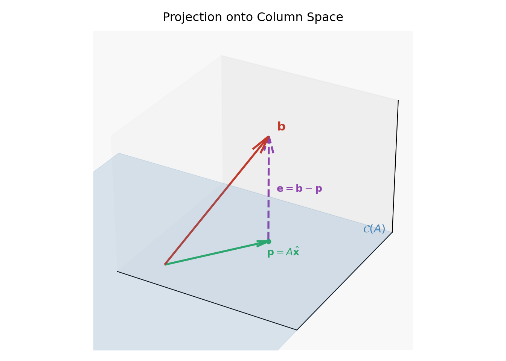
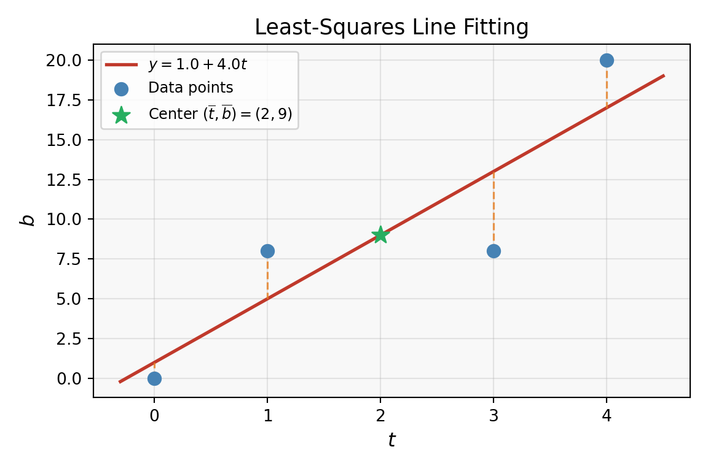

Matplotlib is building the font cache; this may take a moment.(-0.3, 1.5)(-0.3, 1.5)(0.0, 1.5)[][][]
In many real-world applications, we encounter systems of linear equations \(A\mathbf{x} = \mathbf{b}\) that have no exact solution. This happens when the system is overdetermined: there are more equations than unknowns (i.e., \(m > n\) for an \(m \times n\) matrix \(A\)). For example, when fitting a line to 100 experimental data points, we have 100 equations but only 2 unknowns (slope and intercept). It is essentially impossible for any single line to pass through all 100 points exactly.
Rather than declaring defeat, we ask a better question: What is the best approximate solution? This is the least squares problem.
Definition (Least-Squares Solution): Given \(A \in \mathbb{R}^{m \times n}\) and \(\mathbf{b} \in \mathbb{R}^m\), the least-squares solution is the vector \(\hat{\mathbf{x}} \in \mathbb{R}^n\) that minimizes the residual norm:
\[\|A\hat{\mathbf{x}} - \mathbf{b}\|^2 = \sum_{i=1}^m (a_i^T \hat{\mathbf{x}} - b_i)^2\]
where \(a_i^T\) is the \(i\)-th row of \(A\) and \(b_i\) is the \(i\)-th entry of \(\mathbf{b}\). The name “least squares” comes from the fact that we are minimizing the sum of squared errors between the predictions \(A\hat{\mathbf{x}}\) and the observations \(\mathbf{b}\).
Suppose we want to find the best line \(y = mx + c\) through three points: \((1, 1)\), \((2, 2)\), \((3, 2)\). Substituting each point gives the system:
\[\begin{cases} m \cdot 1 + c = 1 \\ m \cdot 2 + c = 2 \\ m \cdot 3 + c = 2 \end{cases} \quad \Longleftrightarrow \quad \underbrace{\begin{bmatrix} 1 & 1 \\ 2 & 1 \\ 3 & 1 \end{bmatrix}}_{A} \underbrace{\begin{bmatrix} m \\ c \end{bmatrix}}_{\mathbf{x}} = \underbrace{\begin{bmatrix} 1 \\ 2 \\ 2 \end{bmatrix}}_{\mathbf{b}}\]
No single line passes through all three points (try it — you’ll get a contradiction). The least-squares approach finds the line that minimizes the total squared vertical distance from the data points to the line.
Least squares appears everywhere:
The key geometric insight is this: \(A\mathbf{x}\) always lies in the column space \(\mathcal{C}(A)\), no matter what \(\mathbf{x}\) we choose. If \(\mathbf{b} \notin \mathcal{C}(A)\), then no exact solution exists. But we can still ask: what is the closest point in \(\mathcal{C}(A)\) to \(\mathbf{b}\)?
That closest point is the orthogonal projection of \(\mathbf{b}\) onto \(\mathcal{C}(A)\), denoted \(\mathbf{p} = \text{proj}_{\mathcal{C}(A)}(\mathbf{b})\). The least-squares solution \(\hat{\mathbf{x}}\) is exactly the vector satisfying \(A\hat{\mathbf{x}} = \mathbf{p}\).
The error vector \(\mathbf{e} = \mathbf{b} - \mathbf{p} = \mathbf{b} - A\hat{\mathbf{x}}\) is orthogonal to the entire column space \(\mathcal{C}(A)\). This orthogonality condition is the key to deriving the solution.
Matplotlib is building the font cache; this may take a moment.(-0.3, 1.5)(-0.3, 1.5)(0.0, 1.5)[][][]
The orthogonality condition \(\mathbf{e} \perp \mathcal{C}(A)\) means \(\mathbf{e}\) is orthogonal to every column of \(A\). Since the columns span \(\mathcal{C}(A)\), this is equivalent to:
\[A^T(\mathbf{b} - A\hat{\mathbf{x}}) = \mathbf{0}\]
Expanding this gives the normal equations:
\[\boxed{A^T A \hat{\mathbf{x}} = A^T \mathbf{b}}\]
This is always a consistent system. If \(A\) has full column rank (columns are linearly independent), then \(A^T A\) is invertible and the unique least-squares solution is:
\[\hat{\mathbf{x}} = (A^T A)^{-1} A^T \mathbf{b}\]
We can also derive the normal equations by minimizing \(f(\mathbf{x}) = \|A\mathbf{x} - \mathbf{b}\|^2\) directly. Expanding:
\[f(\mathbf{x}) = (A\mathbf{x} - \mathbf{b})^T(A\mathbf{x} - \mathbf{b}) = \mathbf{x}^T A^T A \mathbf{x} - 2\mathbf{b}^T A\mathbf{x} + \mathbf{b}^T \mathbf{b}\]
Taking the gradient and setting it to zero:
\[\nabla f(\mathbf{x}) = 2A^T A\mathbf{x} - 2A^T \mathbf{b} = \mathbf{0}\]
\[\Longrightarrow \quad A^T A\mathbf{x} = A^T \mathbf{b}\]
This confirms the normal equations from a calculus perspective.
The matrix \(A^T A\) is always:
For a subspace \(V \subseteq \mathbb{R}^m\), the projection of \(\mathbf{b}\) onto \(V\) is the unique vector \(\mathbf{p} \in V\) closest to \(\mathbf{b}\). The key property is that the error \(\mathbf{b} - \mathbf{p}\) is orthogonal to \(V\).
When \(V = \mathcal{C}(A)\) (column space of \(A\)), the projection of \(\mathbf{b}\) is:
\[\mathbf{p} = A\hat{\mathbf{x}} = A(A^T A)^{-1} A^T \mathbf{b}\]
This means we can define a projection matrix \(P\) such that \(\mathbf{p} = P\mathbf{b}\):
\[\boxed{P = A(A^T A)^{-1} A^T}\]
This matrix \(P\) projects any vector \(\mathbf{b} \in \mathbb{R}^m\) onto the column space \(\mathcal{C}(A)\).
Special case: projection onto a line. If \(V = \text{span}\{\mathbf{a}\}\) (a single nonzero vector \(\mathbf{a}\)), then:
\[P = \frac{\mathbf{a}\mathbf{a}^T}{\mathbf{a}^T \mathbf{a}}\]
A matrix \(P\) is an orthogonal projection matrix if and only if it satisfies two conditions:
These can be verified for \(P = A(A^T A)^{-1}A^T\):
Additional properties:
For \(P = \frac{\mathbf{a}\mathbf{a}^T}{\mathbf{a}^T \mathbf{a}}\):
\[P^2 = \frac{\mathbf{a}\mathbf{a}^T}{\mathbf{a}^T \mathbf{a}} \cdot \frac{\mathbf{a}\mathbf{a}^T}{\mathbf{a}^T \mathbf{a}} = \frac{\mathbf{a}(\mathbf{a}^T \mathbf{a})\mathbf{a}^T}{(\mathbf{a}^T \mathbf{a})^2} = \frac{(\mathbf{a}^T \mathbf{a})\,\mathbf{a}\mathbf{a}^T}{(\mathbf{a}^T \mathbf{a})^2} = \frac{\mathbf{a}\mathbf{a}^T}{\mathbf{a}^T \mathbf{a}} = P\]
The scalar \(\mathbf{a}^T \mathbf{a}\) in the middle cancels with one factor in the denominator.
Given \(n\) data points \((t_1, b_1), (t_2, b_2), \ldots, (t_n, b_n)\), we want to find the best-fit line \(b = C + Dt\). Setting up the overdetermined system \(A\mathbf{x} \approx \mathbf{b}\):
\[A = \begin{pmatrix} 1 & t_1 \\ 1 & t_2 \\ \vdots & \vdots \\ 1 & t_n \end{pmatrix}, \quad \mathbf{x} = \begin{pmatrix} C \\ D \end{pmatrix}, \quad \mathbf{b} = \begin{pmatrix} b_1 \\ b_2 \\ \vdots \\ b_n \end{pmatrix}\]
The least-squares solution via normal equations \(A^T A\hat{\mathbf{x}} = A^T \mathbf{b}\) gives the best-fit line.
Key fact: The best-fit line always passes through the point of averages \((\bar{t}, \bar{b})\) where \(\bar{t} = \frac{1}{n}\sum t_i\) and \(\bar{b} = \frac{1}{n}\sum b_i\). This follows directly from the first normal equation.

The same idea extends to fitting higher-dimensional surfaces. To fit a plane \(y = C + Dt + Ez\) to data points \((y_i, t_i, z_i)\):
\[A = \begin{pmatrix} 1 & t_1 & z_1 \\ 1 & t_2 & z_2 \\ \vdots & \vdots & \vdots \\ 1 & t_n & z_n \end{pmatrix}, \quad \mathbf{x} = \begin{pmatrix} C \\ D \\ E \end{pmatrix}\]
The normal equations \(A^T A\hat{\mathbf{x}} = A^T \mathbf{b}\) still apply, now giving a \(3 \times 3\) system for three unknowns.
Solving the normal equations \(A^T A \hat{\mathbf{x}} = A^T \mathbf{b}\) via \((A^T A)^{-1}\) is mathematically valid but can be numerically unstable. The condition number of \(A^T A\) is the square of the condition number of \(A\) — meaning small errors in \(A\) or \(\mathbf{b}\) can be amplified dramatically.
The QR decomposition avoids forming \(A^T A\) entirely, giving a more stable computation.
Factor \(A\) as \(A = QR\) where \(Q\) is \(m \times n\) with orthonormal columns (\(Q^T Q = I_n\)) and \(R\) is \(n \times n\) upper triangular with positive diagonal entries. Substituting into the normal equations:
\[A^T A \hat{\mathbf{x}} = A^T \mathbf{b}\] \[(QR)^T (QR) \hat{\mathbf{x}} = (QR)^T \mathbf{b}\] \[R^T \underbrace{Q^T Q}_{I} R \hat{\mathbf{x}} = R^T Q^T \mathbf{b}\] \[R^T R \hat{\mathbf{x}} = R^T Q^T \mathbf{b}\]
If \(R\) is invertible (i.e., \(A\) has full column rank), multiply by \((R^T)^{-1}\):
\[\boxed{R\hat{\mathbf{x}} = Q^T \mathbf{b}}\]
Since \(R\) is upper triangular, the system \(R\hat{\mathbf{x}} = Q^T \mathbf{b}\) is solved efficiently by back substitution — no matrix inversion needed. The algorithm is:
Advantages over normal equations:
Find the projection matrix onto the column space of:
\[A = \begin{pmatrix} 1 & 0 \\ 1 & 1 \\ 1 & 2 \end{pmatrix}\]
Key Concept: The projection matrix onto \(\mathcal{C}(A)\) is \(P = A(A^T A)^{-1}A^T\).
Compute \(A^T A\): \[A^T A = \begin{pmatrix} 1 & 1 & 1 \\ 0 & 1 & 2 \end{pmatrix} \begin{pmatrix} 1 & 0 \\ 1 & 1 \\ 1 & 2 \end{pmatrix} = \begin{pmatrix} 3 & 3 \\ 3 & 5 \end{pmatrix}\]
Compute \((A^T A)^{-1}\): \[\det(A^T A) = 15 - 9 = 6\] \[(A^T A)^{-1} = \frac{1}{6} \begin{pmatrix} 5 & -3 \\ -3 & 3 \end{pmatrix}\]
Compute the projection matrix \(P = A(A^T A)^{-1}A^T\): \[A(A^T A)^{-1} = \frac{1}{6} \begin{pmatrix} 1 & 0 \\ 1 & 1 \\ 1 & 2 \end{pmatrix} \begin{pmatrix} 5 & -3 \\ -3 & 3 \end{pmatrix} = \frac{1}{6} \begin{pmatrix} 5 & -3 \\ 2 & 0 \\ -1 & 3 \end{pmatrix}\]
\[P = \frac{1}{6} \begin{pmatrix} 5 & -3 \\ 2 & 0 \\ -1 & 3 \end{pmatrix} \begin{pmatrix} 1 & 1 & 1 \\ 0 & 1 & 2 \end{pmatrix} = \frac{1}{6} \begin{pmatrix} 5 & 2 & -1 \\ 2 & 2 & 2 \\ -1 & 2 & 5 \end{pmatrix}\]
Verify: \(P^2 = P\) and \(P^T = P\) ✓ (the matrix is symmetric by inspection)
Answer: \(P = \dfrac{1}{6} \begin{pmatrix} 5 & 2 & -1 \\ 2 & 2 & 2 \\ -1 & 2 & 5 \end{pmatrix}\)
Find the best-fit line \(y = mx + c\) through the points \((1, 1)\), \((2, 2)\), \((3, 2)\) using least squares.
Key Concept: Set up the overdetermined system \(A\mathbf{x} = \mathbf{b}\) and solve the normal equations \(A^T A\hat{\mathbf{x}} = A^T \mathbf{b}\).
Set up the system \(A\mathbf{x} = \mathbf{b}\): \[\begin{bmatrix} 1 & 1 \\ 2 & 1 \\ 3 & 1 \end{bmatrix} \begin{bmatrix} m \\ c \end{bmatrix} = \begin{bmatrix} 1 \\ 2 \\ 2 \end{bmatrix}\]
Compute \(A^T A\) and \(A^T \mathbf{b}\): \[A^T A = \begin{bmatrix} 1 & 2 & 3 \\ 1 & 1 & 1 \end{bmatrix} \begin{bmatrix} 1 & 1 \\ 2 & 1 \\ 3 & 1 \end{bmatrix} = \begin{bmatrix} 14 & 6 \\ 6 & 3 \end{bmatrix}\]
\[A^T \mathbf{b} = \begin{bmatrix} 1 & 2 & 3 \\ 1 & 1 & 1 \end{bmatrix} \begin{bmatrix} 1 \\ 2 \\ 2 \end{bmatrix} = \begin{bmatrix} 11 \\ 5 \end{bmatrix}\]
Solve the normal equations: \[\begin{bmatrix} 14 & 6 \\ 6 & 3 \end{bmatrix} \begin{bmatrix} m \\ c \end{bmatrix} = \begin{bmatrix} 11 \\ 5 \end{bmatrix}\]
Using the \(2 \times 2\) inverse formula with \(\det = 42 - 36 = 6\): \[\begin{bmatrix} m \\ c \end{bmatrix} = \frac{1}{6} \begin{bmatrix} 3 & -6 \\ -6 & 14 \end{bmatrix} \begin{bmatrix} 11 \\ 5 \end{bmatrix} = \frac{1}{6} \begin{bmatrix} 33 - 30 \\ -66 + 70 \end{bmatrix} = \begin{bmatrix} 0.5 \\ 2/3 \end{bmatrix}\]
Answer: The best-fit line is \(y = 0.5x + \dfrac{2}{3}\).
Fit a line \(y = ax + b\) to the data points \((1, 2)\), \((2, 3)\), \((3, 5)\), \((4, 4)\), \((5, 6)\).
Key Concept: Form the design matrix, compute the normal equations, and solve.
Set up \(A\mathbf{x} = \mathbf{y}\): \[A = \begin{pmatrix} 1 & 1 \\ 2 & 1 \\ 3 & 1 \\ 4 & 1 \\ 5 & 1 \end{pmatrix}, \quad \mathbf{x} = \begin{pmatrix} a \\ b \end{pmatrix}, \quad \mathbf{y} = \begin{pmatrix} 2 \\ 3 \\ 5 \\ 4 \\ 6 \end{pmatrix}\]
Compute \(A^T A\) and \(A^T \mathbf{y}\): \[A^T A = \begin{pmatrix} \sum x_i^2 & \sum x_i \\ \sum x_i & n \end{pmatrix} = \begin{pmatrix} 55 & 15 \\ 15 & 5 \end{pmatrix}\]
(since \(\sum x_i^2 = 1+4+9+16+25=55\), \(\sum x_i = 15\))
\[A^T \mathbf{y} = \begin{pmatrix} \sum x_i y_i \\ \sum y_i \end{pmatrix} = \begin{pmatrix} 69 \\ 20 \end{pmatrix}\]
(since \(\sum x_i y_i = 2 + 6 + 15 + 16 + 30 = 69\))
Solve the normal equations: \[\begin{pmatrix} 55 & 15 \\ 15 & 5 \end{pmatrix} \begin{pmatrix} a \\ b \end{pmatrix} = \begin{pmatrix} 69 \\ 20 \end{pmatrix}\]
From the second equation: \(15a + 5b = 20 \Rightarrow b = 4 - 3a\).
Substituting into the first: \(55a + 15(4 - 3a) = 69 \Rightarrow 10a = 9 \Rightarrow a = 0.9\).
Then \(b = 4 - 3(0.9) = 1.3\).
Answer: The least-squares line is \(y = 0.9x + 1.3\).
Prove there is no matrix whose row space contains \((1, 2, 1)\) and whose null space contains \((1, -2, 1)\).
Key Concept: The row space \(\mathcal{C}(A^T)\) and null space \(\mathcal{N}(A)\) of any matrix are orthogonal complements in \(\mathbb{R}^n\):
\[\mathcal{C}(A^T) \perp \mathcal{N}(A) \implies \mathbf{u} \in \mathcal{C}(A^T),\ \mathbf{v} \in \mathcal{N}(A) \implies \mathbf{u}^T \mathbf{v} = 0\]
Let \(\mathbf{u} = (1, 2, 1)^T\) and \(\mathbf{v} = (1, -2, 1)^T\). Check their dot product:
\[\mathbf{u}^T \mathbf{v} = 1(1) + 2(-2) + 1(1) = 1 - 4 + 1 = -2 \neq 0\]
Since \(\mathbf{u}\) and \(\mathbf{v}\) are not orthogonal, they cannot simultaneously be in the row space and null space of the same matrix.
Answer: No such matrix exists, because any vector in the row space must be orthogonal to any vector in the null space, but \((1,2,1) \cdot (1,-2,1) = -2 \neq 0\).
For each case, construct a matrix with the required property or prove it is impossible:
(1) Column space contains \(\begin{bmatrix} 1 \\ 2 \\ -3 \end{bmatrix}\) and \(\begin{bmatrix} 2 \\ -3 \\ 5 \end{bmatrix}\); null space contains \(\begin{bmatrix} 1 \\ 1 \\ 1 \end{bmatrix}\).
(2) Row space contains \(\begin{bmatrix} 1 \\ 2 \\ -3 \end{bmatrix}\) and \(\begin{bmatrix} 2 \\ -3 \\ 5 \end{bmatrix}\); null space contains \(\begin{bmatrix} 1 \\ 1 \\ 1 \end{bmatrix}\).
(3) \(A\mathbf{x} = \begin{bmatrix} 1 \\ 1 \\ 1 \end{bmatrix}\) has a solution and \(A^T\begin{bmatrix} 1 \\ 0 \\ 0 \end{bmatrix} = \begin{bmatrix} 0 \\ 0 \\ 0 \end{bmatrix}\).
(4) Every row is orthogonal to every column (\(A\) is not the zero matrix).
(5) The columns add to a column of \(0\)s; the rows add to a row of \(1\)s.
(1) Possible. We need \(A\mathbf{c} = \mathbf{0}\) for \(\mathbf{c} = (1,1,1)^T\), with the two given vectors spanning \(\mathcal{C}(A)\). Take:
\[A = \begin{bmatrix} 1 & 2 & a_1 \\ 2 & -3 & a_2 \\ -3 & 5 & a_3 \end{bmatrix}\]
Require \(A\mathbf{c} = \mathbf{0}\):
\[\begin{cases} 1 + 2 + a_1 = 0 \Rightarrow a_1 = -3 \\ 2 - 3 + a_2 = 0 \Rightarrow a_2 = 1 \\ -3 + 5 + a_3 = 0 \Rightarrow a_3 = -2 \end{cases}\]
So \(A = \begin{bmatrix} 1 & 2 & -3 \\ 2 & -3 & 1 \\ -3 & 5 & -2 \end{bmatrix}\) works.
(2) Impossible. The row space vectors \(\mathbf{u}_1 = (1,2,-3)^T\) and the null space vector \(\mathbf{n} = (1,1,1)^T\) must be orthogonal:
\[\mathbf{u}_1^T \mathbf{n} = 1 + 2 - 3 = 0 \checkmark\] \[\mathbf{u}_2^T \mathbf{n} = 2 - 3 + 5 = 4 \neq 0\]
The second vector \((2,-3,5)^T\) in the row space is not orthogonal to the null space vector, so no such matrix exists.
(3) Impossible. \(A^T(1,0,0)^T = \mathbf{0}\) means \((1,0,0)^T \in \mathcal{N}(A^T)\), i.e., \((1,0,0)^T \perp \mathcal{C}(A)\). Therefore the first component of every vector in \(\mathcal{C}(A)\) must be 0. For \(A\mathbf{x} = (1,1,1)^T\) to have a solution, \((1,1,1)^T\) must be in \(\mathcal{C}(A)\) — but its first component is 1, not 0. Contradiction.
(4) Possible. If every row is orthogonal to every column, then \(A^2 = 0\) (consider: \((A^2)_{ij} = \text{row}_i(A) \cdot \text{col}_j(A) = 0\)). A simple example:
\[A = \begin{bmatrix} 0 & 1 \\ 0 & 0 \end{bmatrix}\]
Row 1 = \((0,1)\), Col 1 = \((0,0)^T\): \((0,1)(0,0)^T = 0\) ✓; Row 1 and Col 2 = \((1,0)^T\): \((0,1)(1,0)^T = 0\) ✓. And \(A \neq 0\). Such matrices (nilpotent) are possible.
(5) Impossible. If columns add to \(\mathbf{0}\), then \(A\mathbf{1} = \mathbf{0}\) (where \(\mathbf{1} = (1,\ldots,1)^T\)), so \(\mathbf{1} \in \mathcal{N}(A)\). If rows add to \((1,1,\ldots,1)\), then \(A^T\mathbf{1} = \mathbf{1}\), so \(\mathbf{1} \in \mathcal{C}(A^T)\) (the row space). But \(\mathcal{N}(A) \perp \mathcal{C}(A^T)\), and \(\mathbf{1}\) would need to be orthogonal to itself: \(\mathbf{1} \cdot \mathbf{1} = n \neq 0\). Impossible.
Describe the smallest subspace of the \(2 \times 2\) matrix space \(M\) that contains:
(1) \(\begin{bmatrix} 1 & 0 \\ 0 & 0 \end{bmatrix}\) and \(\begin{bmatrix} 0 & 1 \\ 0 & 0 \end{bmatrix}\)
(2) \(\begin{bmatrix} 1 & 0 \\ 0 & 0 \end{bmatrix}\) and \(\begin{bmatrix} 1 & 0 \\ 0 & 1 \end{bmatrix}\)
(3) \(\begin{bmatrix} 1 & 1 \\ 0 & 0 \end{bmatrix}\)
(4) \(\begin{bmatrix} 1 & 1 \\ 0 & 0 \end{bmatrix}\), \(\begin{bmatrix} 1 & 0 \\ 0 & 1 \end{bmatrix}\), and \(\begin{bmatrix} 0 & 1 \\ 0 & 1 \end{bmatrix}\)
Key Concept: The smallest subspace containing a set of vectors (or matrices) is the span of those vectors.
(1) All linear combinations \(\alpha\begin{bmatrix} 1 & 0 \\ 0 & 0 \end{bmatrix} + \beta\begin{bmatrix} 0 & 1 \\ 0 & 0 \end{bmatrix} = \begin{bmatrix} \alpha & \beta \\ 0 & 0 \end{bmatrix}\). The smallest subspace is the set of matrices with zero bottom row: \(\left\{\begin{bmatrix} a & b \\ 0 & 0 \end{bmatrix} \mid a, b \in \mathbb{R}\right\}\).
(2) \(\alpha\begin{bmatrix} 1 & 0 \\ 0 & 0 \end{bmatrix} + \beta\begin{bmatrix} 1 & 0 \\ 0 & 1 \end{bmatrix} = \begin{bmatrix} \alpha+\beta & 0 \\ 0 & \beta \end{bmatrix}\). Any diagonal matrix \(\begin{bmatrix} t_1 & 0 \\ 0 & t_2 \end{bmatrix}\) can be obtained with \(\beta = t_2\) and \(\alpha = t_1 - t_2\). The smallest subspace is the space of diagonal \(2 \times 2\) matrices.
(3) All scalar multiples \(\alpha\begin{bmatrix} 1 & 1 \\ 0 & 0 \end{bmatrix} = \begin{bmatrix} \alpha & \alpha \\ 0 & 0 \end{bmatrix}\). The smallest subspace is \(\left\{\begin{bmatrix} \alpha & \alpha \\ 0 & 0 \end{bmatrix} \mid \alpha \in \mathbb{R}\right\}\) — a 1-dimensional subspace.
(4) Combining all three with coefficients \(\alpha, \beta, \gamma\): \[\begin{bmatrix} \alpha+\beta & \alpha+\gamma \\ 0 & \beta+\gamma \end{bmatrix}\] The system \(\alpha+\beta = t_1\), \(\alpha+\gamma = t_2\), \(\beta+\gamma = t_3\) always has a unique solution (the coefficient matrix is nonsingular). So the span is the space of all upper triangular \(2 \times 2\) matrices.
Let \(P = \dfrac{\mathbf{a}\mathbf{a}^T}{\mathbf{a}^T\mathbf{a}}\) be the projection matrix onto a line. Show that \(P^2 = P\).
Key Concept: The scalar \(\mathbf{a}^T\mathbf{a}\) appears in the numerator when multiplying the two \(P\) matrices, canceling one factor from the denominator.
\[P^2 = \frac{\mathbf{a}\mathbf{a}^T}{\mathbf{a}^T\mathbf{a}} \cdot \frac{\mathbf{a}\mathbf{a}^T}{\mathbf{a}^T\mathbf{a}} = \frac{\mathbf{a}(\mathbf{a}^T\mathbf{a})\mathbf{a}^T}{(\mathbf{a}^T\mathbf{a})^2}\]
Since \(\mathbf{a}^T\mathbf{a}\) is a scalar (a real number), it can be factored out:
\[P^2 = \frac{(\mathbf{a}^T\mathbf{a})\,\mathbf{a}\mathbf{a}^T}{(\mathbf{a}^T\mathbf{a})^2} = \frac{\mathbf{a}\mathbf{a}^T}{\mathbf{a}^T\mathbf{a}} = P \quad \square\]
Find the best straight-line fit (least squares) \(b = c + dt\) to the measurements:
| \(t\) | \(b\) |
|---|---|
| \(-2\) | \(4\) |
| \(-1\) | \(3\) |
| \(0\) | \(1\) |
| \(2\) | \(0\) |
Then find the projection of \(\mathbf{b} = (4, 3, 1, 0)^T\) onto the column space of \(A\).
Key Concept: The least-squares line minimizes total squared vertical errors. The projection formula then gives \(\mathbf{p} = A\hat{\mathbf{x}}\).
Set up the system: \[A = \begin{pmatrix} 1 & -2 \\ 1 & -1 \\ 1 & 0 \\ 1 & 2 \end{pmatrix}, \quad \mathbf{b} = \begin{pmatrix} 4 \\ 3 \\ 1 \\ 0 \end{pmatrix}\]
Compute \(A^T A\) and \(A^T \mathbf{b}\): \[A^T A = \begin{pmatrix} 4 & -1 \\ -1 & 9 \end{pmatrix}, \quad A^T \mathbf{b} = \begin{pmatrix} 8 \\ -11 \end{pmatrix}\]
(Check: \(\sum t_i = -2-1+0+2 = -1\); \(\sum t_i^2 = 4+1+0+4 = 9\); \(\sum b_i = 8\); \(\sum t_i b_i = -8-3+0+0 = -11\).)
Solve the normal equations: \[\det(A^T A) = 36 - 1 = 35, \quad (A^T A)^{-1} = \frac{1}{35}\begin{pmatrix} 9 & 1 \\ 1 & 4 \end{pmatrix}\]
\[\begin{pmatrix} c \\ d \end{pmatrix} = \frac{1}{35}\begin{pmatrix} 9 & 1 \\ 1 & 4 \end{pmatrix}\begin{pmatrix} 8 \\ -11 \end{pmatrix} = \frac{1}{35}\begin{pmatrix} 61 \\ -36 \end{pmatrix} \approx \begin{pmatrix} 1.74 \\ -1.03 \end{pmatrix}\]
The best-fit line is \(b \approx 1.74 - 1.03t\).
Find the projection \(\mathbf{p} = A\hat{\mathbf{x}}\):
Using the projection formula \(\mathbf{p} = A(A^T A)^{-1}A^T\mathbf{b}\):
\[\mathbf{p} = A \cdot \frac{1}{35}\begin{pmatrix} 61 \\ -36 \end{pmatrix} = \frac{1}{35}\begin{pmatrix} 1 & -2 \\ 1 & -1 \\ 1 & 0 \\ 1 & 2 \end{pmatrix}\begin{pmatrix} 61 \\ -36 \end{pmatrix} = \frac{1}{35}\begin{pmatrix} 133 \\ 97 \\ 61 \\ -11 \end{pmatrix}\]
Answer: Best-fit line: \(b \approx 1.74 - 1.03t\). Projection: \(\mathbf{p} = \dfrac{1}{35}\begin{pmatrix} 133 \\ 97 \\ 61 \\ -11 \end{pmatrix}\).
Find the projection matrix \(P\) onto the space spanned by \(\mathbf{a}_1 = (1, 0, 1)^T\) and \(\mathbf{a}_2 = (1, 1, -1)^T\).
Key Concept: Form the matrix \(A = [\mathbf{a}_1 \mid \mathbf{a}_2]\) and compute \(P = A(A^T A)^{-1}A^T\).
Form \(A\): \[A = \begin{bmatrix} 1 & 1 \\ 0 & 1 \\ 1 & -1 \end{bmatrix}\]
Compute \(A^T A\): \[A^T A = \begin{bmatrix} 1 & 0 & 1 \\ 1 & 1 & -1 \end{bmatrix}\begin{bmatrix} 1 & 1 \\ 0 & 1 \\ 1 & -1 \end{bmatrix} = \begin{bmatrix} 2 & 0 \\ 0 & 3 \end{bmatrix}\]
(\(A^T A\) is diagonal because \(\mathbf{a}_1 \cdot \mathbf{a}_2 = 1 + 0 - 1 = 0\) — the columns are already orthogonal!)
Compute \((A^T A)^{-1}\): \[(A^T A)^{-1} = \begin{bmatrix} 1/2 & 0 \\ 0 & 1/3 \end{bmatrix}\]
Compute \(P = A(A^T A)^{-1}A^T\): \[A(A^T A)^{-1} = \begin{bmatrix} 1 & 1 \\ 0 & 1 \\ 1 & -1 \end{bmatrix}\begin{bmatrix} 1/2 & 0 \\ 0 & 1/3 \end{bmatrix} = \frac{1}{6}\begin{bmatrix} 3 & 2 \\ 0 & 2 \\ 3 & -2 \end{bmatrix}\]
\[P = \frac{1}{6}\begin{bmatrix} 3 & 2 \\ 0 & 2 \\ 3 & -2 \end{bmatrix}\begin{bmatrix} 1 & 0 & 1 \\ 1 & 1 & -1 \end{bmatrix} = \frac{1}{6}\begin{bmatrix} 5 & 2 & 1 \\ 2 & 2 & -2 \\ 1 & -2 & 5 \end{bmatrix}\]
Verify: \(P^2 = P\) and \(P^T = P\) ✓
Answer: \(P = \dfrac{1}{6}\begin{bmatrix} 5 & 2 & 1 \\ 2 & 2 & -2 \\ 1 & -2 & 5 \end{bmatrix}\)
Is the projection matrix \(P = \dfrac{\mathbf{a}\mathbf{a}^T}{\mathbf{a}^T\mathbf{a}}\) invertible? Why or why not?
Key Concept: The rank of an outer product \(\mathbf{a}\mathbf{a}^T\) is always 1 (for nonzero \(\mathbf{a}\)), because every column is a scalar multiple of \(\mathbf{a}\).
The matrix \(P\) has the form:
\[P = \frac{1}{\mathbf{a}^T\mathbf{a}} \begin{pmatrix} a_1 \\ a_2 \\ \vdots \\ a_n \end{pmatrix} \begin{pmatrix} a_1 & a_2 & \cdots & a_n \end{pmatrix} = \frac{1}{\mathbf{a}^T\mathbf{a}} \begin{pmatrix} a_1 a_1 & a_1 a_2 & \cdots \\ a_2 a_1 & a_2 a_2 & \cdots \\ \vdots & & \ddots \end{pmatrix}\]
Every column of \(P\) is a scalar multiple of \(\mathbf{a}\), so the columns are linearly dependent. Therefore:
Answer: No, \(P\) is not invertible. Its rank is 1, so it has a nontrivial null space (all vectors orthogonal to \(\mathbf{a}\) are mapped to zero). A non-square or rank-deficient matrix cannot be invertible.
Let \(\mathbf{a} = (1, 3)^T\).
(a) Find the projection matrix \(P_1\) onto the line through \(\mathbf{a}\), and also the matrix \(P_2\) that projects onto the line perpendicular to \(\mathbf{a}\).
(b) Compute \(P_1 + P_2\) and \(P_1 P_2\), and explain the results.
Key Concept: Two complementary projection matrices onto perpendicular lines must sum to \(I\) and compose to \(0\).
(a) Finding \(P_1\) and \(P_2\):
For \(\mathbf{a} = \begin{pmatrix} 1 \\ 3 \end{pmatrix}\), compute \(\mathbf{a}^T\mathbf{a} = 1 + 9 = 10\):
\[P_1 = \frac{\mathbf{a}\mathbf{a}^T}{\mathbf{a}^T\mathbf{a}} = \frac{1}{10} \begin{pmatrix} 1 \\ 3 \end{pmatrix} \begin{pmatrix} 1 & 3 \end{pmatrix} = \frac{1}{10} \begin{pmatrix} 1 & 3 \\ 3 & 9 \end{pmatrix}\]
The line perpendicular to \(\mathbf{a} = (1, 3)^T\) in \(\mathbb{R}^2\) has direction \(\mathbf{a}^\perp = (-3, 1)^T\) (rotate 90°). Then \((\mathbf{a}^\perp)^T\mathbf{a}^\perp = 9 + 1 = 10\):
\[P_2 = \frac{\mathbf{a}^\perp (\mathbf{a}^\perp)^T}{(\mathbf{a}^\perp)^T\mathbf{a}^\perp} = \frac{1}{10} \begin{pmatrix} -3 \\ 1 \end{pmatrix} \begin{pmatrix} -3 & 1 \end{pmatrix} = \frac{1}{10} \begin{pmatrix} 9 & -3 \\ -3 & 1 \end{pmatrix}\]
(b) Sum and product:
\[P_1 + P_2 = \frac{1}{10}\begin{pmatrix} 1 & 3 \\ 3 & 9 \end{pmatrix} + \frac{1}{10}\begin{pmatrix} 9 & -3 \\ -3 & 1 \end{pmatrix} = \frac{1}{10}\begin{pmatrix} 10 & 0 \\ 0 & 10 \end{pmatrix} = I\]
\[P_1 P_2 = \frac{1}{100}\begin{pmatrix} 1 & 3 \\ 3 & 9 \end{pmatrix}\begin{pmatrix} 9 & -3 \\ -3 & 1 \end{pmatrix} = \frac{1}{100}\begin{pmatrix} 0 & 0 \\ 0 & 0 \end{pmatrix} = \mathbf{0}\]
Explanation: Since \(P_1\) and \(P_2\) project onto two perpendicular subspaces that together span \(\mathbb{R}^2\), their sum must recover the full identity (any vector = its part along \(\mathbf{a}\) + its part perpendicular to \(\mathbf{a}\)). Their product is zero because projecting onto one line and then its perpendicular gives the zero vector.
Answer: \(P_1 = \dfrac{1}{10}\begin{pmatrix} 1 & 3 \\ 3 & 9 \end{pmatrix}\), \(P_2 = \dfrac{1}{10}\begin{pmatrix} 9 & -3 \\ -3 & 1 \end{pmatrix}\), \(P_1 + P_2 = I\), \(P_1 P_2 = \mathbf{0}\).
We want to fit a plane \(y = C + Dt + Ez\) to the following 4 data points:
| \(y\) | \(t\) | \(z\) |
|---|---|---|
| 3 | 1 | 1 |
| 5 | 2 | 1 |
| 6 | 0 | 3 |
| 0 | 0 | 0 |
(a) Find the (overdetermined) system \(A\mathbf{x} = \mathbf{b}\) with 4 equations and 3 unknowns.
(b) Set up and solve the \(3 \times 3\) normal equations \(A^T A\hat{\mathbf{x}} = A^T \mathbf{b}\).
Key Concept: Substitute each data point into the plane equation to get one row per data point, then apply the least-squares formula.
(a) Setting up \(A\mathbf{x} = \mathbf{b}\):
Substituting each \((y_i, t_i, z_i)\) into \(y = C + Dt + Ez\):
\[\begin{cases} 3 = C + D + E \\ 5 = C + 2D + E \\ 6 = C + 0D + 3E \\ 0 = C + 0D + 0E \end{cases} \quad \Longleftrightarrow \quad \begin{pmatrix} 1 & 1 & 1 \\ 1 & 2 & 1 \\ 1 & 0 & 3 \\ 1 & 0 & 0 \end{pmatrix} \begin{pmatrix} C \\ D \\ E \end{pmatrix} = \begin{pmatrix} 3 \\ 5 \\ 6 \\ 0 \end{pmatrix}\]
(b) Setting up the normal equations:
Compute \(A^T A\) and \(A^T \mathbf{b}\):
\[A^T A = \begin{pmatrix} 1 & 1 & 1 & 1 \\ 1 & 2 & 0 & 0 \\ 1 & 1 & 3 & 0 \end{pmatrix} \begin{pmatrix} 1 & 1 & 1 \\ 1 & 2 & 1 \\ 1 & 0 & 3 \\ 1 & 0 & 0 \end{pmatrix} = \begin{pmatrix} 4 & 3 & 5 \\ 3 & 5 & 3 \\ 5 & 3 & 11 \end{pmatrix}\]
\[A^T \mathbf{b} = \begin{pmatrix} 1 & 1 & 1 & 1 \\ 1 & 2 & 0 & 0 \\ 1 & 1 & 3 & 0 \end{pmatrix} \begin{pmatrix} 3 \\ 5 \\ 6 \\ 0 \end{pmatrix} = \begin{pmatrix} 14 \\ 13 \\ 26 \end{pmatrix}\]
The normal equations are:
\[\begin{pmatrix} 4 & 3 & 5 \\ 3 & 5 & 3 \\ 5 & 3 & 11 \end{pmatrix} \begin{pmatrix} C \\ D \\ E \end{pmatrix} = \begin{pmatrix} 14 \\ 13 \\ 26 \end{pmatrix}\]
Solving (using the inverse of \(A^T A\)):
\[\begin{pmatrix} C \\ D \\ E \end{pmatrix} \approx \begin{pmatrix} -0.12 \\ 1.46 \\ 2.02 \end{pmatrix}\]
Answer: The best-fit plane is \(y \approx -0.12 + 1.46t + 2.02z\).
Find the projection of \(\mathbf{b}\) onto the column space of \(A\):
\[A = \begin{pmatrix} 1 & 1 \\ 1 & -1 \\ -2 & 4 \end{pmatrix}, \quad \mathbf{b} = \begin{pmatrix} 1 \\ 2 \\ 7 \end{pmatrix}\]
Split \(\mathbf{b}\) into \(\mathbf{p} + \mathbf{q}\), with \(\mathbf{p}\) in \(\mathcal{C}(A)\) and \(\mathbf{q}\) orthogonal to \(\mathcal{C}(A)\). Identify which fundamental subspace contains \(\mathbf{q}\).
Key Concept: The projection \(\mathbf{p} = P\mathbf{b}\) where \(P = A(A^T A)^{-1}A^T\). The complementary part \(\mathbf{q} = \mathbf{b} - \mathbf{p}\) lies in \(\mathcal{N}(A^T)\).
Compute \(A^T A\) and its inverse: \[A^T A = \begin{pmatrix} 1 & 1 & -2 \\ 1 & -1 & 4 \end{pmatrix} \begin{pmatrix} 1 & 1 \\ 1 & -1 \\ -2 & 4 \end{pmatrix} = \begin{pmatrix} 6 & -8 \\ -8 & 18 \end{pmatrix}\]
\[\det(A^T A) = 108 - 64 = 44, \quad (A^T A)^{-1} = \frac{1}{44} \begin{pmatrix} 18 & 8 \\ 8 & 6 \end{pmatrix}\]
Compute the projection matrix \(P\): \[P = A(A^T A)^{-1}A^T = \frac{1}{11} \begin{pmatrix} 10 & 3 & 1 \\ 3 & 2 & -3 \\ 1 & -3 & 10 \end{pmatrix}\]
Compute \(\mathbf{p} = P\mathbf{b}\): \[\mathbf{p} = \frac{1}{11} \begin{pmatrix} 10 & 3 & 1 \\ 3 & 2 & -3 \\ 1 & -3 & 10 \end{pmatrix} \begin{pmatrix} 1 \\ 2 \\ 7 \end{pmatrix} = \frac{1}{11} \begin{pmatrix} 23 \\ -14 \\ 65 \end{pmatrix} = \begin{pmatrix} 23/11 \\ -14/11 \\ 65/11 \end{pmatrix}\]
Compute \(\mathbf{q} = \mathbf{b} - \mathbf{p}\): \[\mathbf{q} = \begin{pmatrix} 1 - 23/11 \\ 2 + 14/11 \\ 7 - 65/11 \end{pmatrix} = \begin{pmatrix} -12/11 \\ 36/11 \\ 12/11 \end{pmatrix}\]
Identify the subspace for \(\mathbf{q}\): Since \(\mathbf{q}\) is orthogonal to \(\mathcal{C}(A)\), it must lie in \(\mathcal{N}(A^T)\) (the left null space). Verify: \(A^T \mathbf{q} = \begin{pmatrix} 1 & 1 & -2 \\ 1 & -1 & 4 \end{pmatrix} \begin{pmatrix} -12/11 \\ 36/11 \\ 12/11 \end{pmatrix} = \begin{pmatrix} 0 \\ 0 \end{pmatrix}\) ✓
Answer: \(\mathbf{p} = \begin{pmatrix} 23/11 \\ -14/11 \\ 65/11 \end{pmatrix}\), \(\mathbf{q} = \begin{pmatrix} -12/11 \\ 36/11 \\ 12/11 \end{pmatrix} \in \mathcal{N}(A^T)\).
Solve \(A\mathbf{x} = \mathbf{b}\) by least squares, and find \(\mathbf{p} = A\hat{\mathbf{x}}\), given:
\[A = \begin{pmatrix} 1 & 0 \\ 0 & 1 \\ 1 & 1 \end{pmatrix}, \quad \mathbf{b} = \begin{pmatrix} 1 \\ 1 \\ 0 \end{pmatrix}\]
Verify that the error \(\mathbf{b} - \mathbf{p}\) is perpendicular to the columns of \(A\).
Key Concept: The least-squares error is always perpendicular to \(\mathcal{C}(A)\); verify by checking \(a_i^T \mathbf{e} = 0\) for each column \(a_i\).
Set up and solve the normal equations \(A^T A \hat{\mathbf{x}} = A^T \mathbf{b}\): \[A^T A = \begin{pmatrix} 1 & 0 & 1 \\ 0 & 1 & 1 \end{pmatrix} \begin{pmatrix} 1 & 0 \\ 0 & 1 \\ 1 & 1 \end{pmatrix} = \begin{pmatrix} 2 & 1 \\ 1 & 2 \end{pmatrix}\]
\[A^T \mathbf{b} = \begin{pmatrix} 1 & 0 & 1 \\ 0 & 1 & 1 \end{pmatrix} \begin{pmatrix} 1 \\ 1 \\ 0 \end{pmatrix} = \begin{pmatrix} 1 \\ 1 \end{pmatrix}\]
\((A^T A)^{-1} = \frac{1}{3}\begin{pmatrix} 2 & -1 \\ -1 & 2 \end{pmatrix}\), so:
\[\hat{\mathbf{x}} = \frac{1}{3}\begin{pmatrix} 2 & -1 \\ -1 & 2 \end{pmatrix}\begin{pmatrix} 1 \\ 1 \end{pmatrix} = \begin{pmatrix} 1/3 \\ 1/3 \end{pmatrix}\]
Compute the projection \(\mathbf{p} = A\hat{\mathbf{x}}\): \[\mathbf{p} = \begin{pmatrix} 1 & 0 \\ 0 & 1 \\ 1 & 1 \end{pmatrix} \begin{pmatrix} 1/3 \\ 1/3 \end{pmatrix} = \begin{pmatrix} 1/3 \\ 1/3 \\ 2/3 \end{pmatrix}\]
Compute the error \(\mathbf{e} = \mathbf{b} - \mathbf{p}\): \[\mathbf{e} = \begin{pmatrix} 1 \\ 1 \\ 0 \end{pmatrix} - \begin{pmatrix} 1/3 \\ 1/3 \\ 2/3 \end{pmatrix} = \begin{pmatrix} 2/3 \\ 2/3 \\ -2/3 \end{pmatrix}\]
Verify orthogonality (let \(a_1 = (1, 0, 1)^T\) and \(a_2 = (0, 1, 1)^T\)): \[a_1^T \mathbf{e} = 1 \cdot \frac{2}{3} + 0 \cdot \frac{2}{3} + 1 \cdot \left(-\frac{2}{3}\right) = \frac{2}{3} - \frac{2}{3} = 0 \checkmark\] \[a_2^T \mathbf{e} = 0 \cdot \frac{2}{3} + 1 \cdot \frac{2}{3} + 1 \cdot \left(-\frac{2}{3}\right) = \frac{2}{3} - \frac{2}{3} = 0 \checkmark\]
Answer: \(\hat{\mathbf{x}} = \begin{pmatrix} 1/3 \\ 1/3 \end{pmatrix}\), \(\mathbf{p} = \begin{pmatrix} 1/3 \\ 1/3 \\ 2/3 \end{pmatrix}\). The error \(\mathbf{e} = \begin{pmatrix} 2/3 \\ 2/3 \\ -2/3 \end{pmatrix}\) is perpendicular to both columns of \(A\).
The data points are \((0, 0)\), \((1, 8)\), \((3, 8)\), \((4, 20)\). The average time is \(\bar{t} = 2\) and the average observation is \(\bar{b} = 9\).
(a) Find the best-fit line \(y = C + Dt\) and verify it passes through \((\bar{t}, \bar{b}) = (2, 9)\).
(b) Explain algebraically why \(C + D\bar{t} = \bar{b}\) always holds for the least-squares line.
Key Concept: The least-squares line always passes through the center of mass (point of averages) of the data. This follows directly from the first normal equation.
(a) Finding the best-fit line:
The design matrix and observation vector are:
\[A = \begin{pmatrix} 1 & 0 \\ 1 & 1 \\ 1 & 3 \\ 1 & 4 \end{pmatrix}, \quad \mathbf{b} = \begin{pmatrix} 0 \\ 8 \\ 8 \\ 20 \end{pmatrix}\]
Compute the normal equation components:
\[A^T A = \begin{pmatrix} 4 & 8 \\ 8 & 26 \end{pmatrix}, \quad A^T \mathbf{b} = \begin{pmatrix} 36 \\ 112 \end{pmatrix}\]
Solving the system \(\begin{pmatrix} 4 & 8 \\ 8 & 26 \end{pmatrix} \begin{pmatrix} C \\ D \end{pmatrix} = \begin{pmatrix} 36 \\ 112 \end{pmatrix}\) gives \(C = 1\), \(D = 4\).
Check: \(C + D\bar{t} = 1 + 4 \cdot 2 = 9 = \bar{b}\) ✓
(b) Algebraic explanation:
The first normal equation comes from the first row of \(A^T A\hat{\mathbf{x}} = A^T \mathbf{b}\):
\[\begin{pmatrix} 1 & 1 & 1 & 1 \end{pmatrix} A \begin{pmatrix} C \\ D \end{pmatrix} = \begin{pmatrix} 1 & 1 & 1 & 1 \end{pmatrix} \mathbf{b}\]
\[nC + D \sum_{i=1}^n t_i = \sum_{i=1}^n b_i\]
Dividing both sides by \(n\):
\[C + D \cdot \frac{1}{n}\sum_{i=1}^n t_i = \frac{1}{n}\sum_{i=1}^n b_i \quad \Longrightarrow \quad C + D\bar{t} = \bar{b}\]
This proves that the least-squares line always passes through the point of averages \((\bar{t}, \bar{b})\).
Answer: Best-fit line is \(y = 1 + 4t\). It passes through \((2, 9)\) since \(1 + 4(2) = 9 = \bar{b}\).
Find the least-squares solution of \(A\mathbf{x} = \mathbf{b}\) using the QR decomposition, given:
\[A = \begin{pmatrix} 1 & 2 & 3 \\ 1 & 0 & 1 \\ 1 & 0 & 0 \\ 1 & 2 & 2 \end{pmatrix}, \quad \mathbf{b} = \begin{pmatrix} 2 \\ 4 \\ 2 \\ 0 \end{pmatrix}\]
with QR decomposition:
\[Q = \begin{pmatrix} 1/2 & 1/2 & 1/2 \\ 1/2 & -1/2 & 1/2 \\ 1/2 & -1/2 & -1/2 \\ 1/2 & 1/2 & -1/2 \end{pmatrix}, \quad R = \begin{pmatrix} 2 & 2 & 3 \\ 0 & 2 & 2 \\ 0 & 0 & 1 \end{pmatrix}\]
Key Concept: With QR decomposition \(A = QR\), the least-squares system reduces to \(R\hat{\mathbf{x}} = Q^T \mathbf{b}\), solvable by back substitution.
Compute \(Q^T \mathbf{b}\): \[Q^T \mathbf{b} = \begin{pmatrix} 1/2 & 1/2 & 1/2 & 1/2 \\ 1/2 & -1/2 & -1/2 & 1/2 \\ 1/2 & 1/2 & -1/2 & -1/2 \end{pmatrix} \begin{pmatrix} 2 \\ 4 \\ 2 \\ 0 \end{pmatrix} = \begin{pmatrix} 4 \\ -2 \\ 2 \end{pmatrix}\]
Solve \(R\hat{\mathbf{x}} = Q^T \mathbf{b}\) by back substitution:
The system is: \[\begin{pmatrix} 2 & 2 & 3 \\ 0 & 2 & 2 \\ 0 & 0 & 1 \end{pmatrix} \begin{pmatrix} x_1 \\ x_2 \\ x_3 \end{pmatrix} = \begin{pmatrix} 4 \\ -2 \\ 2 \end{pmatrix}\]
Answer: \(\hat{\mathbf{x}} = \begin{pmatrix} 2 \\ -3 \\ 2 \end{pmatrix}\)
Given vectors \(\mathbf{x}_1 = \begin{bmatrix} 3 \\ 0 \\ -1 \end{bmatrix}\) and \(\mathbf{x}_2 = \begin{bmatrix} 8 \\ 5 \\ -6 \end{bmatrix}\) that span a subspace \(W\), apply the Gram-Schmidt process to find an orthogonal basis for \(W\).
Key Concept: Gram-Schmidt successively removes the component of each new vector that lies along previously computed orthogonal vectors: \[\mathbf{v}_j = \mathbf{x}_j - \sum_{i=1}^{j-1} \frac{\mathbf{x}_j \cdot \mathbf{v}_i}{\mathbf{v}_i \cdot \mathbf{v}_i}\mathbf{v}_i\]
Answer: An orthogonal basis for \(W\) is \(\left\{ \begin{bmatrix} 3 \\ 0 \\ -1 \end{bmatrix}, \begin{bmatrix} -1 \\ 5 \\ -3 \end{bmatrix} \right\}\).
Given \(\mathbf{x}_1 = \begin{bmatrix} 0 \\ 4 \\ 2 \end{bmatrix}\) and \(\mathbf{x}_2 = \begin{bmatrix} 5 \\ 6 \\ -7 \end{bmatrix}\), find an orthogonal basis for \(W = \text{span}\{\mathbf{x}_1, \mathbf{x}_2\}\).
Answer: An orthogonal basis for \(W\) is \(\left\{ \begin{bmatrix} 0 \\ 4 \\ 2 \end{bmatrix}, \begin{bmatrix} 5 \\ 4 \\ -8 \end{bmatrix} \right\}\).
Given \(\mathbf{x}_1 = \begin{bmatrix} 2 \\ -5 \\ 1 \end{bmatrix}\) and \(\mathbf{x}_2 = \begin{bmatrix} 4 \\ -9/2 \\ 3/2 \end{bmatrix}\), find an orthogonal basis for their span.
Set \(\mathbf{v}_1 = \mathbf{x}_1 = \begin{bmatrix} 2 \\ -5 \\ 1 \end{bmatrix}\), with \(\|\mathbf{v}_1\|^2 = 4 + 25 + 1 = 30\).
Compute projection coefficient: \[\frac{\mathbf{x}_2 \cdot \mathbf{v}_1}{\mathbf{v}_1 \cdot \mathbf{v}_1} = \frac{8 + 45/2 + 3/2}{30} = \frac{8 + 24}{30} = \frac{32}{30} \approx \frac{1}{2} \quad \Longrightarrow \quad \text{coefficient} = \frac{1}{2}\]
Subtract the projection: \[\mathbf{v}_2 = \mathbf{x}_2 - \frac{1}{2}\mathbf{v}_1 = \begin{bmatrix} 4 \\ -9/2 \\ 3/2 \end{bmatrix} - \frac{1}{2}\begin{bmatrix} 2 \\ -5 \\ 1 \end{bmatrix} = \begin{bmatrix} 3 \\ 3/2 \\ 1 \end{bmatrix}\]
From the assignment: \(\mathbf{v}_2 = \begin{bmatrix} 3 \\ 3/2 \\ 3/2 \end{bmatrix}\).
Verify: \(\mathbf{v}_1 \cdot \mathbf{v}_2 = 6 - 15/2 + 3/2 = 6 - 6 = 0\) ✓
Answer: An orthogonal basis for \(W\) is \(\left\{ \begin{bmatrix} 2 \\ -5 \\ 1 \end{bmatrix}, \begin{bmatrix} 3 \\ 3/2 \\ 3/2 \end{bmatrix} \right\}\).
Given \(\mathbf{x}_1 = \begin{bmatrix} 3 \\ -4 \\ 5 \end{bmatrix}\) and \(\mathbf{x}_2 = \begin{bmatrix} -3 \\ 14 \\ -7 \end{bmatrix}\), find an orthogonal basis.
Answer: An orthogonal basis is \(\left\{ \begin{bmatrix} 3 \\ -4 \\ 5 \end{bmatrix}, \begin{bmatrix} 3 \\ 6 \\ 3 \end{bmatrix} \right\}\).
Given \(\mathbf{x}_1 = \begin{bmatrix} 1 \\ -4 \\ 0 \\ 1 \end{bmatrix}\) and \(\mathbf{x}_2 = \begin{bmatrix} 7 \\ -7 \\ -4 \\ 1 \end{bmatrix}\), apply Gram-Schmidt to find an orthogonal basis for their span.
Answer: An orthogonal basis is \(\left\{ \begin{bmatrix} 1 \\ -4 \\ 0 \\ 1 \end{bmatrix}, \begin{bmatrix} 5 \\ 1 \\ -4 \\ -1 \end{bmatrix} \right\}\).
Given \(\mathbf{x}_1 = \begin{bmatrix} 3 \\ -1 \\ 2 \\ -1 \end{bmatrix}\) and \(\mathbf{x}_2 = \begin{bmatrix} -5 \\ 9 \\ -9 \\ 3 \end{bmatrix}\), find an orthogonal basis.
Answer: An orthogonal basis is \(\left\{ \begin{bmatrix} 3 \\ -1 \\ 2 \\ -1 \end{bmatrix}, \begin{bmatrix} 4 \\ 6 \\ -3 \\ 0 \end{bmatrix} \right\}\).
Given that \(A\) and \(Q\) are known, compute \(R = Q^T A\) for:
\[Q = \frac{1}{6}\begin{bmatrix} 5 & -1 \\ 1 & 5 \\ -3 & 1 \\ 1 & 3 \end{bmatrix}, \quad A = \begin{bmatrix} 5 & 9 \\ 1 & 7 \\ -3 & -5 \\ 1 & 5 \end{bmatrix}\]
Key Concept: In QR decomposition, \(R = Q^T A\) since \(Q^T Q = I\).
\[R = Q^T A = \begin{bmatrix} 5/6 & 1/6 & -3/6 & 1/6 \\ -1/6 & 5/6 & 1/6 & 3/6 \end{bmatrix} \begin{bmatrix} 5 & 9 \\ 1 & 7 \\ -3 & -5 \\ 1 & 5 \end{bmatrix}\]
Computing entry by entry:
\[R = \begin{bmatrix} 6 & 12 \\ 0 & 6 \end{bmatrix}\]
Answer: \(R = \begin{bmatrix} 6 & 12 \\ 0 & 6 \end{bmatrix}\)
Given:
\[Q = \frac{1}{7}\begin{bmatrix} -2 & 5 \\ 5 & 2 \\ 2 & -4 \\ 4 & 2 \end{bmatrix}, \quad A = \begin{bmatrix} -2 & 3 \\ 5 & 7 \\ 2 & -2 \\ 4 & 6 \end{bmatrix}\]
Compute \(R = Q^T A\).
\[R = Q^T A = \begin{bmatrix} -2/7 & 5/7 & 2/7 & 4/7 \\ 5/7 & 2/7 & -4/7 & 2/7 \end{bmatrix} \begin{bmatrix} -2 & 3 \\ 5 & 7 \\ 2 & -2 \\ 4 & 6 \end{bmatrix}\]
\[R = \begin{bmatrix} 7 & 7 \\ 0 & 7 \end{bmatrix}\]
Answer: \(R = \begin{bmatrix} 7 & 7 \\ 0 & 7 \end{bmatrix}\)
For the system \(A\mathbf{x} = \mathbf{b}\) where \(A = \begin{bmatrix} -1 & 2 \\ 2 & -3 \\ -1 & 3 \end{bmatrix}\) and \(\mathbf{b} = \begin{bmatrix} 4 \\ 1 \\ 2 \end{bmatrix}\):
(a) Write the normal equations \((A^T A)\mathbf{x} = A^T \mathbf{b}\).
(b) Find the least-squares solution \(\hat{\mathbf{x}}\).
Compute \(A^T A\) and \(A^T \mathbf{b}\): \[A^T A = \begin{bmatrix} -1 & 2 & -1 \\ 2 & -3 & 3 \end{bmatrix} \begin{bmatrix} -1 & 2 \\ 2 & -3 \\ -1 & 3 \end{bmatrix} = \begin{bmatrix} 6 & -11 \\ -11 & 22 \end{bmatrix}\]
\[A^T \mathbf{b} = \begin{bmatrix} -1 & 2 & -1 \\ 2 & -3 & 3 \end{bmatrix} \begin{bmatrix} 4 \\ 1 \\ 2 \end{bmatrix} = \begin{bmatrix} -4 \\ 11 \end{bmatrix}\]
(a) The normal equations are:
\[\begin{bmatrix} 6 & -11 \\ -11 & 22 \end{bmatrix} \begin{bmatrix} x_1 \\ x_2 \end{bmatrix} = \begin{bmatrix} -4 \\ 11 \end{bmatrix}\]
(b) Compute \((A^T A)^{-1}\):
\[\det(A^T A) = 132 - 121 = 11, \quad (A^T A)^{-1} = \frac{1}{11}\begin{bmatrix} 22 & 11 \\ 11 & 6 \end{bmatrix}\]
\[\hat{\mathbf{x}} = \frac{1}{11}\begin{bmatrix} 22 & 11 \\ 11 & 6 \end{bmatrix}\begin{bmatrix} -4 \\ 11 \end{bmatrix} = \frac{1}{11}\begin{bmatrix} -88 + 121 \\ -44 + 66 \end{bmatrix} = \frac{1}{11}\begin{bmatrix} 33 \\ 22 \end{bmatrix} = \begin{bmatrix} 3 \\ 2 \end{bmatrix}\]
Answer: \(\hat{\mathbf{x}} = \begin{bmatrix} 3 \\ 2 \end{bmatrix}\)
For \(A = \begin{bmatrix} 2 & 1 \\ -2 & 0 \\ 2 & 3 \end{bmatrix}\) and \(\mathbf{b} = \begin{bmatrix} -5 \\ 8 \\ 1 \end{bmatrix}\):
(a) Write the normal equations. (b) Find \(\hat{\mathbf{x}}\).
(a) Normal equations: \(\begin{bmatrix} 12 & 8 \\ 8 & 10 \end{bmatrix} \begin{bmatrix} x_1 \\ x_2 \end{bmatrix} = \begin{bmatrix} -24 \\ -2 \end{bmatrix}\)
(b) \[\det(A^T A) = 120 - 64 = 56, \quad (A^T A)^{-1} = \frac{1}{56}\begin{bmatrix} 10 & -8 \\ -8 & 12 \end{bmatrix}\]
\[\hat{\mathbf{x}} = \frac{1}{56}\begin{bmatrix} 10 & -8 \\ -8 & 12 \end{bmatrix}\begin{bmatrix} -24 \\ -2 \end{bmatrix} = \frac{1}{56}\begin{bmatrix} -224 \\ 168 \end{bmatrix} = \begin{bmatrix} -4 \\ 3 \end{bmatrix}\]
Answer: \(\hat{\mathbf{x}} = \begin{bmatrix} -4 \\ 3 \end{bmatrix}\)
For \(A = \begin{bmatrix} 1 & -2 \\ -1 & 2 \\ 0 & 3 \\ 2 & 5 \end{bmatrix}\) and \(\mathbf{b} = \begin{bmatrix} 3 \\ 1 \\ -4 \\ 2 \end{bmatrix}\):
(a) Write the normal equations. (b) Find \(\hat{\mathbf{x}}\).
\[A^T A = \begin{bmatrix} 6 & 6 \\ 6 & 42 \end{bmatrix}, \quad A^T \mathbf{b} = \begin{bmatrix} 6 \\ -6 \end{bmatrix}\]
(a) Normal equations: \(\begin{bmatrix} 6 & 6 \\ 6 & 42 \end{bmatrix}\begin{bmatrix} x_1 \\ x_2 \end{bmatrix} = \begin{bmatrix} 6 \\ -6 \end{bmatrix}\)
(b) \[\det(A^T A) = 252 - 36 = 216, \quad (A^T A)^{-1} = \frac{1}{216}\begin{bmatrix} 42 & -6 \\ -6 & 6 \end{bmatrix}\]
\[\hat{\mathbf{x}} = \frac{1}{216}\begin{bmatrix} 42 & -6 \\ -6 & 6 \end{bmatrix}\begin{bmatrix} 6 \\ -6 \end{bmatrix} = \frac{1}{216}\begin{bmatrix} 288 \\ -72 \end{bmatrix} = \begin{bmatrix} 4/3 \\ -1/3 \end{bmatrix}\]
Answer: \(\hat{\mathbf{x}} = \begin{bmatrix} 4/3 \\ -1/3 \end{bmatrix}\)
For \(A = \begin{bmatrix} 1 & 3 \\ 1 & -1 \\ 1 & 1 \end{bmatrix}\) and \(\mathbf{b} = \begin{bmatrix} 5 \\ 1 \\ 0 \end{bmatrix}\):
(a) Write the normal equations. (b) Find \(\hat{\mathbf{x}}\).
\[A^T A = \begin{bmatrix} 3 & 3 \\ 3 & 11 \end{bmatrix}, \quad A^T \mathbf{b} = \begin{bmatrix} 6 \\ 14 \end{bmatrix}\]
(a) Normal equations: \(\begin{bmatrix} 3 & 3 \\ 3 & 11 \end{bmatrix}\begin{bmatrix} x_1 \\ x_2 \end{bmatrix} = \begin{bmatrix} 6 \\ 14 \end{bmatrix}\)
(b) \[\det(A^T A) = 33 - 9 = 24, \quad (A^T A)^{-1} = \frac{1}{24}\begin{bmatrix} 11 & -3 \\ -3 & 3 \end{bmatrix}\]
\[\hat{\mathbf{x}} = \frac{1}{24}\begin{bmatrix} 11 & -3 \\ -3 & 3 \end{bmatrix}\begin{bmatrix} 6 \\ 14 \end{bmatrix} = \frac{1}{24}\begin{bmatrix} 24 \\ 24 \end{bmatrix} = \begin{bmatrix} 1 \\ 1 \end{bmatrix}\]
Answer: \(\hat{\mathbf{x}} = \begin{bmatrix} 1 \\ 1 \end{bmatrix}\)
Find all least-squares solutions of \(A\mathbf{x} = \mathbf{b}\) where \(A\) and \(\mathbf{b}\) yield the augmented normal equation matrix:
\[\left[ A^T A \mid A^T \mathbf{b} \right] \sim \left[ \begin{array}{ccc|c} 1 & 0 & 1 & 5 \\ 0 & 1 & -1 & -3 \\ 0 & 0 & 0 & 0 \end{array} \right]\]
Key Concept: When \(A^T A\) is not invertible (columns of \(A\) are linearly dependent), the normal equations have infinitely many solutions, parametrized by free variables.
From the reduced row echelon form, \(x_3\) is a free variable. Setting \(x_3 = t\):
All least-squares solutions have the form:
\[\hat{\mathbf{x}} = \begin{bmatrix} 5 \\ -3 \\ 0 \end{bmatrix} + t\begin{bmatrix} -1 \\ 1 \\ 1 \end{bmatrix}, \quad t \in \mathbb{R}\]
Answer: \(\hat{\mathbf{x}} = \begin{bmatrix} 5 \\ -3 \\ 0 \end{bmatrix} + x_3\begin{bmatrix} -1 \\ 1 \\ 1 \end{bmatrix}\) for any \(x_3 \in \mathbb{R}\).
The normal equations reduce to:
\[\left[ A^T A \mid A^T \mathbf{b} \right] \sim \left[ \begin{array}{ccc|c} 1 & 0 & 1 & 5 \\ 0 & 1 & -1 & -1 \\ 0 & 0 & 0 & 0 \end{array} \right]\]
Find all least-squares solutions.
From the RREF, \(x_3 = t\) is free:
\[\hat{\mathbf{x}} = \begin{bmatrix} 5 \\ -1 \\ 0 \end{bmatrix} + t\begin{bmatrix} -1 \\ 1 \\ 1 \end{bmatrix}, \quad t \in \mathbb{R}\]
Answer: \(\hat{\mathbf{x}} = \begin{bmatrix} 5 \\ -1 \\ 0 \end{bmatrix} + x_3\begin{bmatrix} -1 \\ 1 \\ 1 \end{bmatrix}\) for any \(x_3 \in \mathbb{R}\).
Given \(R = \begin{bmatrix} 3 & 5 \\ 0 & 1 \end{bmatrix}\) and \(Q^T \mathbf{b} = \begin{bmatrix} 7 \\ -1 \end{bmatrix}\), find the least-squares solution of \(A\mathbf{x} = \mathbf{b}\).
Key Concept: With QR decomposition, solve \(R\hat{\mathbf{x}} = Q^T \mathbf{b}\) by back substitution.
\[\left[ R \mid Q^T \mathbf{b} \right] = \left[ \begin{array}{cc|c} 3 & 5 & 7 \\ 0 & 1 & -1 \end{array} \right] \xrightarrow{R_1 - 5R_2} \left[ \begin{array}{cc|c} 3 & 0 & 12 \\ 0 & 1 & -1 \end{array} \right] \xrightarrow{R_1/3} \left[ \begin{array}{cc|c} 1 & 0 & 4 \\ 0 & 1 & -1 \end{array} \right]\]
Answer: \(\hat{\mathbf{x}} = \begin{bmatrix} 4 \\ -1 \end{bmatrix}\)
Given \(R = \begin{bmatrix} 2 & 3 \\ 0 & 5 \end{bmatrix}\) and \(Q^T \mathbf{b} = \begin{bmatrix} 17/2 \\ 9/2 \end{bmatrix}\), find the least-squares solution.
Solve \(R\hat{\mathbf{x}} = Q^T \mathbf{b}\) by back substitution:
\[\left[ \begin{array}{cc|c} 2 & 3 & 17/2 \\ 0 & 5 & 9/2 \end{array} \right]\]
Answer: \(\hat{\mathbf{x}} = \begin{bmatrix} 2.9 \\ 0.9 \end{bmatrix}\)